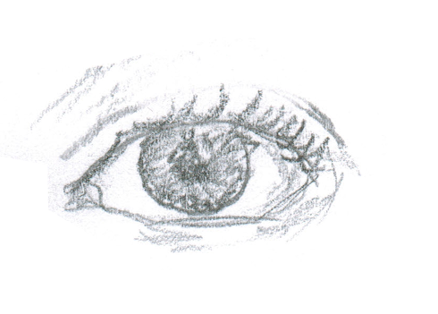
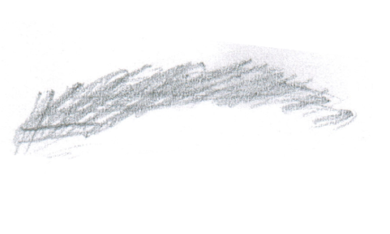
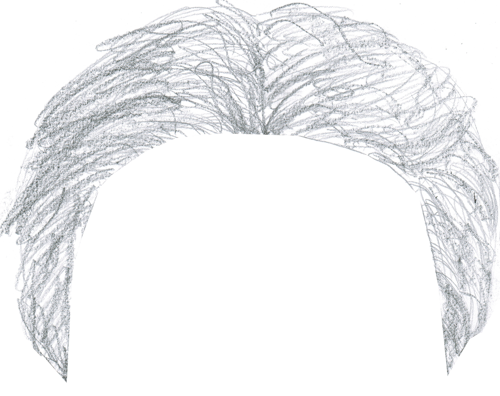
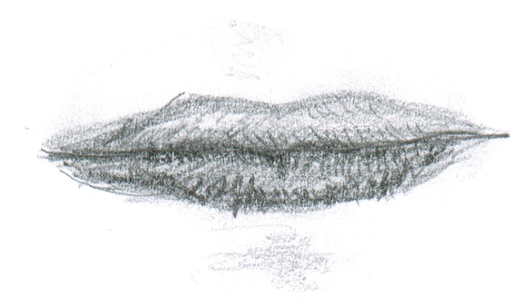
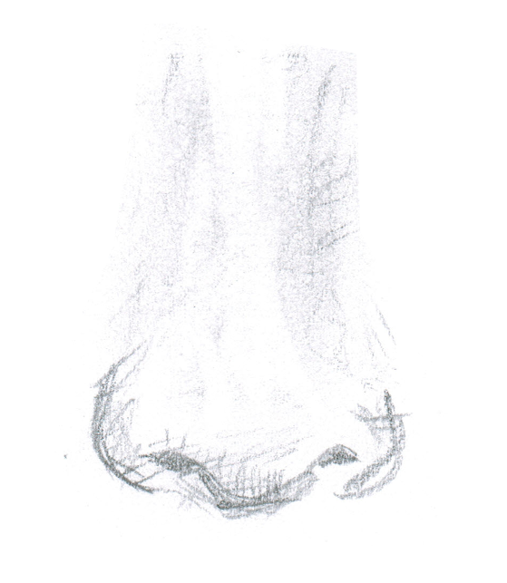
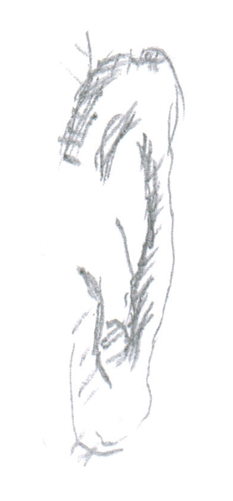

About
Hier erfahren Sie alles über Text To Face
Mit dieser Software können Sie über 250.000 verschiedene Phantombilder erstellen.


Es werden Daten auf Basis von textueller Psychoanalyse gesammelt
Textabgleich mit einer Datenbank, welche mehr als 20.000 Wörter enthält.


Die Website bietet eine einfache Bedienung, sowie eine übersichtliche Darstellung.
Mit Hilfe von Experten wurde der Algorithmus zur Auswertung entwickelt.


Detailreiche Bilder in hoher Auflösung "Made in Germany"